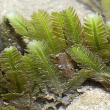
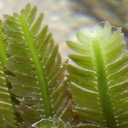
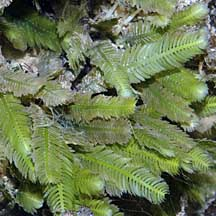
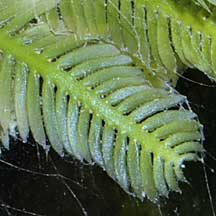
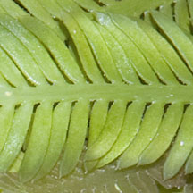
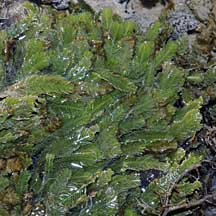
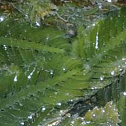

|
|
|
green
seaweeds text index | photo
index
|
| Seaweeds > Division Chlorophyta > Family Caulerpaceae > genus Caulerpa |
| Taxifolia
feathery green seaweed Caulerpa taxifolia* Family Caulerpaceae updated Sep 2019 Where seen? This beautiful feathery green seaweed is commonly seen on many of our shores, growing on coral rubble and sometimes spreading out on sandy bottoms. Usually found in clumps, which can cover an area of about 40-50cm. But it does not blanket the shore like other seasonally abundant seaweeds. Features: Frond feather-like 3-15cm long. The mid-rib or central 'stem' of the feathery structure is flat and usually with a width much narrower than the length of the side 'branches'. Side 'branches' are somewhat flat with a pointed tip. There is a slight constriction where the side 'branch' attaches to the mid-rib. The side 'branches' rarely overlap one another. These feathery structures emerge along the length of a horizontal 'stem' that creeps over hard surfaces or just under the sand. Colours bright to dark green. Sometimes confused with other feathery green seaweeds or with seagrasses. Here's more on how to tell apart different feathery green seaweeds and how to tell apart feathery green seaweeds and seagrasses. Human uses: This green seaweed is reported to be edible, to have antibacterial and antifungal properties, and used to treat tuberculosis and high blood pressure. However, some Caulerpa species produce toxins to protect themselves from browsing fish. This also makes them toxic to humans. Status and threats: This seaweed is native to the tropical waters of the Caribbean and Indo-Pacific. A particular strain of this seaweed developed for the aquarium trade was accidentally introduced to the coasts of the Mediterranean Sea, Australia and California. This strain is resistant to cooler temperate waters and is toxic to native herbivores such as fish, sea urchins and snails. So it grows unchecked and thick carpets of the seaweed smother native plants and deprive native animals of food. Efforts to eradicate it has not succeeded and this seaweed is now considered a noxious introduced alien. |
 Sisters Island, Jul 04 |
 Branch sickle-shaped, slight constriction where it attaches to the mid-rib. Labrador, Nov 04 |
|
 Sentosa, Jul 05  |
 Pulau Salu, Aug 10  |
 Pulau Semakau, Aug 11  |
*Species are difficult to positively identify without close examination of internal parts.
On this website, they are grouped by external features for convenience of display.
| Taxifolia feathery green seaweed on Singapore shores |
On wildsingapore
flickr
|
| Other sightings on Singapore shores |
 Pulau Berkas, May 10 |
 |
Links
|
{kind=link}